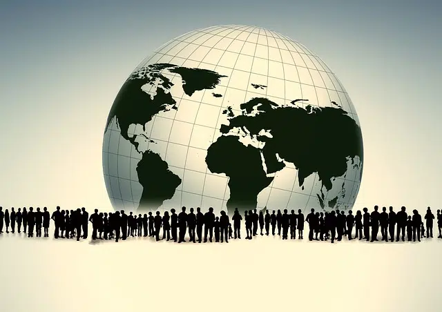

b. Unión Económica
Una Unión Económica es una forma de integración económica en la que los países miembros coordinan sus políticas económicas y ejecutan una política monetaria única. Este tipo de unión implica un grado más profundo de integración que una zona de libre comercio o un mercado común, ya que no solo elimina las barreras comerciales entre los países miembros, sino que también armoniza las políticas económicas y monetarias para promover una mayor cohesión y eficiencia económica dentro del área de la unión.
c. Nuevo León y Tamaulipas
La zona económica noreste de México está compuesta por los estados de Nuevo León y Tamaulipas. Esta región es conocida por su actividad industrial, comercial y de servicios, con importantes centros urbanos como Monterrey, en Nuevo León, y Ciudad Victoria, en Tamaulipas. Estos estados tienen una relevancia significativa en la economía mexicana, especialmente en sectores como la manufactura, la energía y el comercio.
a. Unión Aduanera
Una Unión Aduanera es un tipo de integración económica en la que los estados miembros establecen una tarifa exterior común. Esto significa que los países miembros aplican un arancel común a los bienes importados de países que no pertenecen a la unión. Además de eliminar las barreras comerciales entre los miembros, una unión aduanera coordina una política comercial común hacia los estados que no son miembros.
b. Salida de inversiones y caída del consumo
El terrorismo tiene varias consecuencias negativas en la economía, y una de las más significativas es la salida de inversiones y la caída del consumo. Cuando ocurren actos terroristas, los inversores y consumidores pueden volverse cautelosos y reacios a comprometerse con la economía afectada. La incertidumbre y el riesgo asociados con el terrorismo pueden llevar a una disminución de la inversión tanto nacional como extranjera, así como a una reducción en el gasto de los consumidores, lo que puede debilitar el crecimiento económico y afectar negativamente la estabilidad financiera.

b. Desarrollo económico
El desarrollo económico se refiere a la capacidad de los ingresos de los países o regiones para crear riqueza con el fin de mantener la prosperidad o bienestar económico y social de sus habitantes. Implica un proceso sostenido de crecimiento económico, pero también abarca aspectos más amplios como la equidad, la distribución del ingreso, el acceso a servicios básicos, la calidad de vida y la sostenibilidad ambiental. Es un concepto más integral que el simple crecimiento económico, ya que considera el bienestar social y la distribución equitativa de los beneficios económicos.

d. La aldea global
El término "aldea global" hace referencia a la interconexión mundial facilitada por los avances en los medios de comunicación, particularmente los medios electrónicos. La comunicación instantánea y la difusión rápida de información a nivel global han transformado el mundo en una "aldea global", donde las consecuencias socioculturales de esta comunicación son significativas. La noción de la aldea global sugiere que el mundo se ha vuelto más interdependiente y que las fronteras geográficas son cada vez menos significativas en términos de comunicación e interacción cultural.
Electrónico, empaque y automotriz
Chihuahua es conocido por albergar industrias clave como la electrónica, el empaque y la automotriz. Estas industrias han tenido un impacto significativo en la economía de la región, contribuyendo a su desarrollo industrial y empleo. La industria electrónica, en particular, ha experimentado un crecimiento notable en Chihuahua, con la presencia de diversas empresas que fabrican componentes y dispositivos electrónicos. La industria del empaque también es importante debido a su relación con la exportación y la logística, mientras que la industria automotriz ha sido una fuente importante de empleo y producción en la región.

b. El grupo de los 8
El Grupo de los 8 (G8) solía ser una asociación de las ocho economías más industrializadas del mundo: Canadá, Francia, Alemania, Italia, Japón, Rusia, el Reino Unido y los Estados Unidos. Sin embargo, en 2014, Rusia fue suspendida del grupo, y desde entonces, el formato cambió al G7. Estas economías representan una parte significativa del PIB mundial y, por lo tanto, las discusiones y políticas que emergen de estas reuniones pueden tener un impacto en la economía global. Aunque el G8/G7 no es la única influencia en la economía mundial, sí es una de las principales plataformas donde se discuten cuestiones económicas y políticas relevantes para la economía global.
c. Exportadores de materias primas
Los países dependientes son aquellos que tienen una fuerte dependencia económica de la exportación de materias primas, lo que los hace vulnerables a los cambios en los precios mundiales de dichas materias. Esta dependencia puede limitar su capacidad para diversificar su economía y aumentar su desarrollo sostenible. Los países dependientes suelen enfrentar desafíos en términos de desarrollo humano debido a la volatilidad de los mercados de materias primas y la falta de diversificación económica.
c. Refinería de Salina Cruz
La Refinería de Salina Cruz es una instalación petrolera ubicada en el estado de Oaxaca, México. Es una de las refinerías más importantes del país y desempeña un papel crucial en el procesamiento y refinación de petróleo crudo para la producción de productos derivados del petróleo.
c. Mayores ingresos a la hacienda pública
El arancel para extraer utilidad de un monopolio extranjero tiene como objetivo generar mayores ingresos para la hacienda pública. Los aranceles son impuestos aplicados a las importaciones, y en el contexto de un monopolio extranjero, pueden utilizarse como una forma de aumentar los ingresos del gobierno al gravar la importación de productos del monopolio. Esto puede ser una estrategia para aumentar los ingresos gubernamentales y financiar diversas actividades y proyectos dentro del país.
b. El Monetarismo
El Monetarismo es una teoría económica asociada principalmente con el economista Milton Friedman y otros, que enfatiza el papel de la oferta monetaria en la determinación de los resultados económicos, especialmente la inflación y el crecimiento económico a largo plazo. El enunciado describe la idea central del Monetarismo, que sostiene que un aumento en la oferta monetaria conducirá a un aumento de la producción en el corto plazo pero también a la inflación en el largo plazo.
a. Integración económica
La eliminación progresiva de barreras al comercio entre países con el objetivo de lograr beneficios mutuos se refiere a la integración económica. Esto implica un proceso mediante el cual los países acuerdan cooperar más estrechamente en áreas como el comercio, las finanzas, la política y la cultura, con el fin de obtener ventajas económicas y sociales para todas las partes involucradas. La integración económica puede implicar la eliminación de aranceles, la facilitación del movimiento de personas y capitales, y la cooperación en políticas económicas y comerciales comunes.

Aumento del PIB
El crecimiento económico se caracteriza por el aumento del Producto Interno Bruto (PIB), que es una medida del valor total de todos los bienes y servicios producidos en una economía en un período determinado. El crecimiento económico generalmente se acompaña de un aumento en la producción, el empleo y los ingresos, aunque no necesariamente garantiza automáticamente un mayor bienestar social o una mayor esperanza de vida. Estos aspectos pueden estar relacionados con el crecimiento económico, pero no son características intrínsecas del mismo. La prosperidad social y el bienestar son objetivos que los países buscan alcanzar a través del crecimiento económico, pero no son características directas de éste.
c. La sobreproducción y subconsumo
La sobreproducción y el subconsumo se consideran una de las principales fallas de mercado en el desarrollo de la economía mundial. Esto ocurre cuando hay una producción excesiva de bienes y servicios en relación con la demanda del consumidor. La sobreproducción puede llevar a un exceso de oferta en el mercado, lo que a su vez puede resultar en la reducción de los precios y la capacidad de las empresas para obtener ganancias. Además, el subconsumo se refiere a la situación en la que los consumidores no pueden adquirir todos los bienes y servicios producidos debido a limitaciones financieras. Esto puede llevar a una falta de demanda agregada y a un desequilibrio en la economía. Estas dinámicas pueden causar inestabilidad económica y desequilibrios que afectan el desarrollo económico mundial.

a. El dumping y desplazar a la competencia
Los subsidios a las exportaciones son una forma de apoyo gubernamental que reduce los costos de producción para los productores domésticos, lo que les permite vender sus productos a precios más bajos en los mercados internacionales. Esto puede resultar en dumping, que es cuando una empresa vende sus productos a un precio inferior al costo de producción o al precio en el mercado nacional con el objetivo de desplazar a la competencia extranjera y ganar participación en el mercado internacional.
b. La intervención y regulación comercial
La política comercial estratégica implica la intervención y regulación por parte del gobierno en la economía para promover ciertos objetivos estratégicos, como el desarrollo industrial, la protección de sectores sensibles, la promoción de exportaciones, entre otros. Esta intervención puede incluir la imposición de aranceles, subsidios a la exportación, cuotas de importación, entre otras medidas, con el fin de beneficiar a determinados sectores económicos y promover los intereses nacionales.

La prospectiva es el conjunto de tentativas sistemáticas para observar a largo plazo el futuro de la ciencia, la tecnología, la economía y la sociedad con el propósito de identificar las tecnologías emergentes que probablemente produzcan los mayores beneficios económicos y sociales. Es una herramienta utilizada en la planificación estratégica y la toma de decisiones, ya que permite anticipar posibles escenarios futuros y prepararse para ellos. La prospectiva ayuda a identificar oportunidades y riesgos, así como a diseñar políticas y estrategias para aprovechar el potencial de las tecnologías emergentes.

c. Interdependencia económica
La interdependencia económica se refiere a la relación entre diferentes sistemas económicos o países donde cada uno depende de los demás para obtener bienes y servicios que no pueden producir eficientemente por sí mismos. Esta dependencia mutua crea una red comercial donde los participantes, ya sean individuos, empresas o países, necesitan interactuar y comerciar entre sí para satisfacer sus necesidades y maximizar su bienestar económico. La interdependencia económica es un concepto fundamental en el estudio de la economía global y el comercio internacional.

Recursos abundantes y enormes extensiones
Los países emergentes generalmente tienen una serie de características comunes. Tienen recursos abundantes y, a menudo, enormes extensiones de tierra, recursos naturales y mano de obra. Además, están en vías de desarrollo y son dependientes en diversos grados de los países desarrollados o de otros actores globales en términos de comercio, inversión y tecnología. Estos países están experimentando un crecimiento económico y desarrollo, aunque pueden enfrentar desafíos significativos en su camino hacia el desarrollo sostenible.

d. Michoacán y Jalisco
Los estados principales del Bajío en México son Michoacán y Jalisco. Esta región es conocida por su importancia económica y agrícola, así como por su contribución a la industria manufacturera y automotriz del país. Aunque Zacatecas y Sinaloa son estados importantes en otras regiones de México, no son parte del Bajío. Tlaxcala y Querétaro, así como Hidalgo y Puebla, están geográficamente más cercanos a la región del Bajío, pero Michoacán y Jalisco son los estados que comúnmente se asocian con esta zona.

FOBAPROA
El FOBAPROA (Fondo Bancario de Protección al Ahorro) fue un programa de rescate financiero implementado por el gobierno mexicano en 1998 para enfrentar la crisis bancaria que se desató en el país a mediados de la década de 1990. La crisis bancaria fue resultado de una serie de factores, incluyendo malas prácticas de gestión, préstamos incobrables y falta de regulación adecuada en el sistema bancario mexicano. El FOBAPROA fue creado para rescatar a los bancos mexicanos en dificultades financieras y proteger los ahorros de los depositantes. Bajo este programa, el gobierno asumió la responsabilidad de pagar las deudas y los pasivos de los bancos en quiebra, garantizando así la estabilidad del sistema financiero y evitando una crisis aún mayor.
China y zona de Asia-Pacifica
el declive geopolítico percibido en Estados Unidos, se observa un cambio en la distribución del poder económico, político, financiero y militar hacia China y la región de Asia-Pacífico. Sin embargo, es importante considerar que el equilibrio de poder global es complejo y está sujeto a cambios a lo largo del tiempo.
Social
El sector público abarca todas las actividades, instituciones y servicios controlados o financiados por el gobierno. Su función principal es proporcionar bienes y servicios públicos que son esenciales para el funcionamiento de la sociedad y el bienestar de sus ciudadanos.
Las TIC'S
Las TIC (Tecnologías de la Información y la Comunicación) son un conjunto de herramientas, recursos y tecnologías que permiten la adquisición, producción, almacenamiento, tratamiento, comunicación, registro y presentación de información de manera digital. Incluyen tanto hardware como software, así como los servicios asociados a estos componentes.
Economico y Militar
Esta afirmación hace referencia a las guerras de ocupación en Afganistán e Irak, que representaron un importante desgaste económico, político y militar para Estados Unidos.
Navegador de internet
Esta afirmación parece referirse a las aplicaciones informáticas o tecnológicas que permiten el acceso a los servicios y recursos de la sociedad de la información. Esto puede incluir aplicaciones web, plataformas móviles, redes sociales, entre otras herramientas digitales.
Estrategias competitivas
Las estrategias competitivas son planes y acciones que una empresa desarrolla y ejecuta para alcanzar ventajas competitivas y mejorar su posición en el mercado. Estas estrategias se centran en cómo la empresa puede competir de manera efectiva y diferenciarse de sus competidores en un entorno empresarial.
Bipolaridad
Una economía bipolar, por otro lado, se refiere más a una situación en la que existen dos polos económicos o dos fuerzas dominantes que compiten entre sí, como en el caso de la bipolaridad geopolítica durante la Guerra Fría. Este término no necesariamente captura la idea de satisfacer tanto la demanda social como la solvente en el contexto económico.
Exxon Mobil
Exxon Mobil Corporation es una de las compañías petroleras y energéticas más grandes del mundo. Es el resultado de la fusión de Exxon Corporation y Mobil Corporation en 1999, formando una de las mayores corporaciones integradas de petróleo y gas natural del mundo.
Estado benefactor
El término "Estado benefactor" se refiere a un modelo de Estado que asume la responsabilidad de proveer una serie de servicios y beneficios sociales a sus ciudadanos. Surgió como respuesta a las condiciones socioeconómicas adversas del siglo XIX y XX, especialmente después de la Gran Depresión y la Segunda Guerra Mundial, cuando se intensificaron las demandas por una mayor intervención estatal para abordar la pobreza, la desigualdad y otras necesidades sociales.
El comercio electronio o E-Commers
Esta afirmación describe el comercio electrónico, que implica la compra y venta de bienes y servicios a través de plataformas digitales y redes informáticas.
Los subsidios
Los subsidios son pagos o beneficios financieros que el gobierno u otra entidad otorgan a individuos, empresas o grupos específicos para apoyar o fomentar ciertas actividades económicas, sociales o políticas. Estos subsidios pueden adoptar diversas formas y pueden dirigirse a una variedad de sectores y propósitos.
Apple
Esta afirmación parece referirse al éxito creciente de una empresa, posiblemente relacionada con la tecnología, que ha visto un aumento en la adopción de sus productos, incluyendo dispositivos móviles como el iPhone y el iPad, así como computadoras personales.
Credito e hipotecario
Esta afirmación parece referirse al inicio de la crisis económica en los Estados Unidos en 2005, la cual afectó principalmente varios sectores económicos de ese país y tuvo repercusiones a nivel global.
Estados unidos
La integración económica no se origina ni se desarrolla específicamente en Estados Unidos, aunque Estados Unidos ha tenido un papel significativo en algunos aspectos de la integración económica global. La integración económica es un proceso que implica la cooperación entre países para reducir barreras comerciales, promover la libre circulación de bienes, servicios, capitales y personas, y fomentar la integración de sus economías.
Petroleo
Correcto, durante los años 70 y 80, el mercado del petróleo experimentó importantes cambios que provocaron un fuerte efecto inflacionista y una reducción en la actividad económica mundial. Estos cambios estuvieron relacionados con una serie de eventos, incluyendo la crisis del petróleo de 1973 y la crisis del petróleo de 1979. La crisis del petróleo de 1973 comenzó cuando la Organización de Países Exportadores de Petróleo (OPEP) decidió restringir la producción y aumentar los precios del petróleo como respuesta al apoyo occidental a Israel durante la Guerra del Yom Kippur. Esta medida resultó en un aumento significativo en los precios del petróleo y tuvo un impacto negativo en la economía mundial, llevando a una inflación alta y a una desaceleración económica en muchos países. La crisis del petróleo de 1979 fue el resultado de la revolución iraní y la interrupción en el suministro de petróleo desde Irán. Esto provocó un nuevo aumento en los precios del petróleo y exacerbó los problemas económicos en muchas partes del mundo, especialmente en aquellos países altamente dependientes de las importaciones de petróleo. Estas crisis del petróleo contribuyeron a una época de alta inflación y recesión en muchos países, y llevaron a un replanteamiento de las políticas energéticas y económicas en todo el mundo. Las economías occidentales se vieron obligadas a adoptar medidas para reducir su dependencia del petróleo importado y a diversificar sus fuentes de energía. La volatilidad en el mercado del petróleo durante este período fue uno de los factores clave que afectaron la economía global en los años 70 y 80.
Clasicos
La afirmación de que la Escuela de Chicago y sus pensadores lograron la reivindicación de los economistas clásicos es precisa y relevante dentro del contexto del pensamiento económico y las políticas públicas. La Escuela de Chicago, especialmente durante el siglo XX, fue un importante centro de pensamiento económico que abogaba por el liberalismo económico y las políticas de libre mercado. Sus principales figuras, como Milton Friedman, Friedrich Hayek y George Stigler, entre otros, promovieron ideas que tenían sus raíces en la tradición de los economistas clásicos, como Adam Smith, David Ricardo y John Stuart Mill. Estos economistas clásicos defendían la idea de que el libre mercado, con una mínima intervención del gobierno, era el mejor mecanismo para asignar recursos y promover el crecimiento económico. Creían en los principios de la competencia, la propiedad privada, la libertad individual y la no intervención gubernamental en los asuntos económicos.
Europa
La crisis económica griega comenzó en 2009, no en agosto de 2007. Se desencadenó por una serie de factores, incluyendo la crisis financiera global, la mala gestión fiscal, la corrupción y otros problemas estructurales en la economía griega.
Economica y politica
La caída del Muro de Berlín en 1989 marcó el fin de la Guerra Fría y simbolizó el colapso del comunismo en Europa del Este. Las dos libertades que se lograron con la caída del Muro de Berlín son la libertad política y la libertad económica.
Laizzes faire
La teoría macroeconómica Keynesiana es intervencionista y se opone a la doctrina del laissez-faire, que aboga por una mínima intervención del gobierno en la economía.
Precios
Los cambios en la cantidad de dinero pueden tener efectos a corto plazo en el nivel de precios, la inflación y otras variables económicas, pero no generan cambios permanentes en el nivel de producción a largo plazo.
Los subsidios
Esta afirmación parece referirse a políticas o situaciones que fomentan el aumento de la oferta global de productos y servicios, lo que puede ejercer presión a la baja sobre los precios internacionales.
Walmart
Esta descripción parece corresponder a Walmart, una empresa multinacional estadounidense que se dedica a la venta al por menor con un enfoque en precios bajos y alto volumen de ventas.
Solvente
La "demanda solvente" se refiere a la capacidad financiera de los consumidores para adquirir bienes y servicios a un determinado precio en el mercado. La solvencia se relaciona directamente con la capacidad de pago de los individuos o grupos sociales. En términos económicos, una demanda se considera solvente cuando los consumidores tienen los medios financieros necesarios para realizar una compra. Estos medios pueden provenir de ingresos regulares, ahorros, créditos, préstamos u otras fuentes de financiamiento que permitan a los consumidores adquirir los bienes y servicios que desean.
Segundo NEW DEAL (aldea blobal)
Marshall McLuhan, un teórico de los medios de comunicación, sugirió que los avances en la tecnología de la comunicación, especialmente la televisión y los medios electrónicos, estaban creando una "aldea global" donde las personas estarían interconectadas e interdependientes, independientemente de su ubicación geográfica.